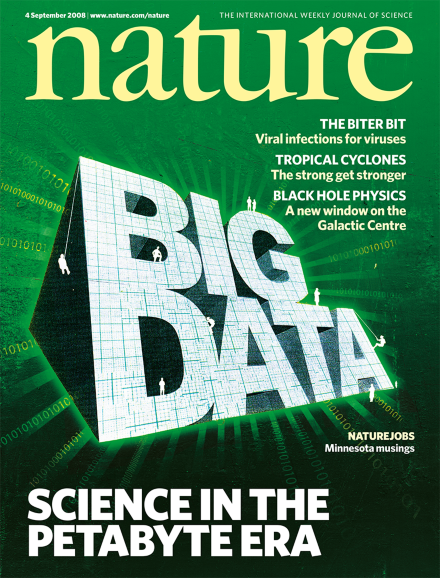
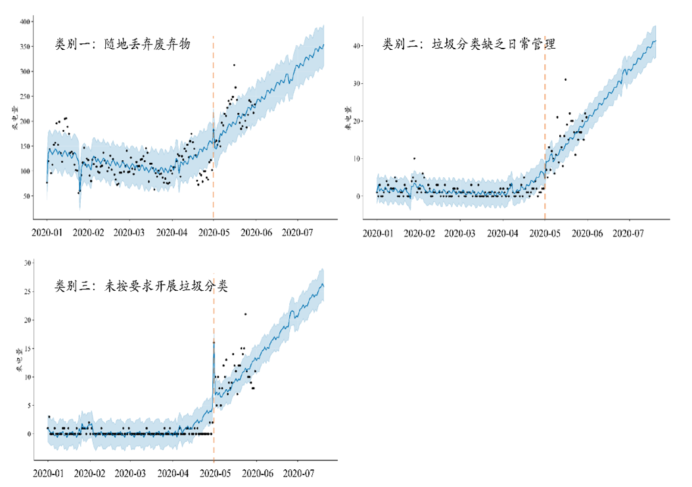

政务数据的分析价值和基本原则
2023-07-10
什么是大数据

- 社会数字化—海量资源待处理
- 数据科学—计算机辅助方法
- 新生现象—新理论、新范式
人类社会“快速、大尺度、深层次”数字化转型

计算社会科学
“计算社会科学”这一研究领域正在兴起，人们将在前所未有的深度和广度上自动地收集和利用数据，为社会科学的研究服务。社会计算是指社会行为和计算系统交叉融合而成的一个研究领域，研究的是如何利用计算技术帮助人们进行沟通与协作，如何利用计算技术研究社会运行的规律与发展趋势。


计算·社会科学

关系分析

模式学习

规律学习

因果推断

举例：儒学院关闭的因果效应
- 得到Google Jigsaw的支持
- 监控全球100多种语言的广播、印刷和网络新闻无处不在
- 变量：人物、地点、组织机构、主题、来源、情感、计数、引语、图像和事件

Shutting-down vs. Ice cream


推断结果

时空分析

商情数据驾驶舱

整合司法大数据、网络舆情大数据、政务热线大数据、企业营商大数据等数据资源，在此基础上进行大数据分析展示，分析营商热点，挖掘民声民意，以便快速的做出工作的响应。
风险评估


创新性迷思


问题导向 + 多元整合 + 社会科学思维
伦理性迷思

复杂抽样


研究指向
描述
已知 ⇒ 未知
- 无偏（正确😄）
- 高效（准确😅）

机制
搞清why & how
……
but how?
知识基础

硬件基础


感谢关注，欢迎交流

{kind=link}
{kind=link}
参考文献
Arthur, Charles. 2013. “Tech Giants May Be Huge, but Nothing Matches Big Data.” The Guardian, August.
Cirone, Alexandra, and William Hobbs. 2022. “Asymmetric Flooding as a Tool for Foreign Influence on Social Media.” Political Science Research and Methods, March, 1–12. https://doi.org/10.1017/psrm.2022.9.
Gärtner, Bernhard, and Martin R. W. Hiebl. 2017. “Issues with Big Data.” In The Routledge Companion to Accounting Information Systems. Routledge.
Gebru, Timnit, Jonathan Krause, Yilun Wang, Duyun Chen, Jia Deng, Erez Lieberman Aiden, and Li Fei-Fei. 2017. “Using Deep Learning and Google Street View to Estimate the Demographic Makeup of Neighborhoods Across the United States.” Proceedings of the National Academy of Sciences 114 (50): 13108–13. https://doi.org/10.1073/pnas.1700035114.
Goldston, David. 2008. “Big data: data wrangling.” Nature 455 (7209): 15–15. https://doi.org/10.1038/455015a.
Hey, Tony. 2009. The Fourth Paradigm: Data-Intensive Scientific Discovery. Edited by Stewart Tansley and Kristin Tolle. 1st edition. Redmond, Washington: Microsoft Research.
King, Gary. 2016. “Preface: Big Data Is Not about the Data!” In Computational Social Science: Discovery and Prediction, edited by R. Michael Alvarez. Cambridge: Cambridge University Press.
King, Gary, Jennifer Pan, and Margaret E. Roberts. 2017. “How the Chinese Government Fabricates Social Media Posts for Strategic Distraction, Not Engaged Argument.” American Political Science Review 111 (3): 484–501.
Lazer, David, Alex Pentland, Lada Adamic, Sinan Aral, Albert-László Barabási, Devon Brewer, Nicholas Christakis, et al. 2009. “Computational Social Science.” Science 323 (5915): 721–23. https://doi.org/10.1126/science.1167742.
Liu, Lizhi. 2021. “The Rise of Data Politics: Digital China and the World.” Studies in Comparative International Development 56 (1): 45–67. https://doi.org/10.1007/s12116-021-09319-8.
Michel, Jean-Baptiste, Yuan Kui Shen, Aviva Presser Aiden, Adrian Veres, Matthew K. Gray, The Google Books Team, Joseph P. Pickett, et al. 2011. “Quantitative Analysis of Culture Using Millions of Digitized Books.” Science 331 (6014): 176–82. https://doi.org/10.1126/science.1199644.
Palmer, Michael. 2006. “Data Is the New Oil.” ANA Marketing Maestros.
Samuel, A. L. 2000. “Some Studies in Machine Learning Using the Game of Checkers.” IBM Journal of Research and Development 44 (1.2): 206–26. https://doi.org/10.1147/rd.441.0206.
Science Staff. 2011. “Challenges and Opportunities.” Science 331 (6018): 692–93. https://doi.org/10.1126/science.331.6018.692.
Singh, Malvika. 2023. “Is Data Still the New Oil?” Medium.
The Economist. 2017. “The World’s Most Valuable Resource Is No Longer Oil, but Data.” The Economist, May.